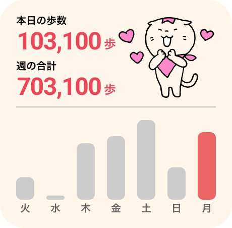
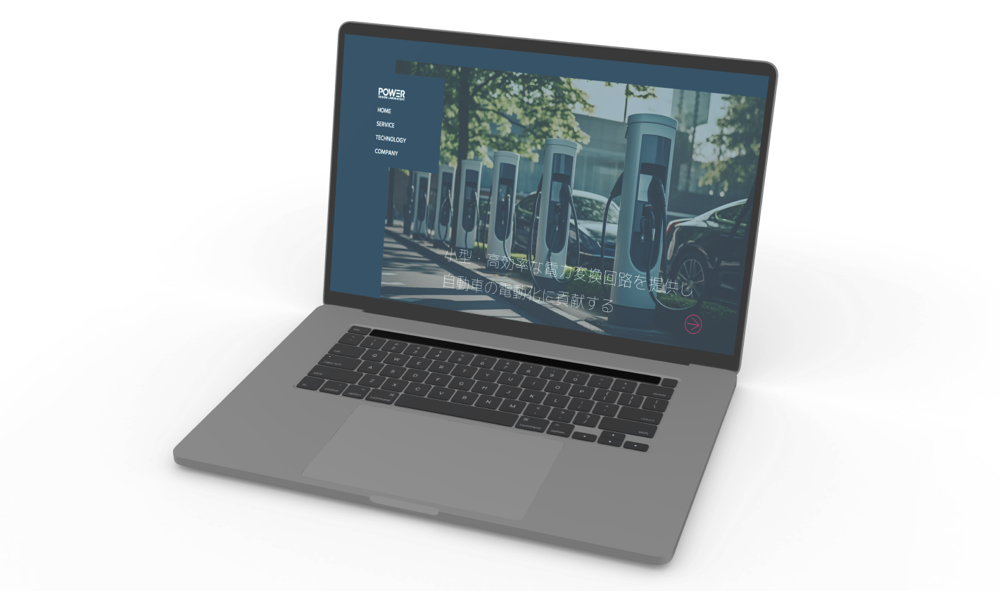
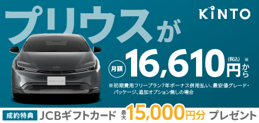
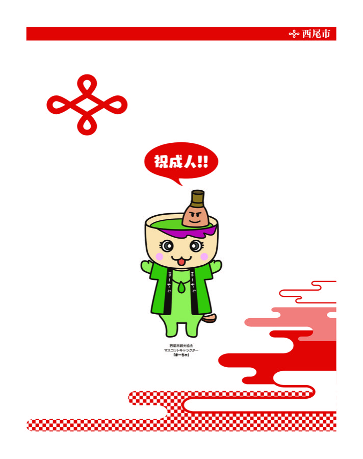
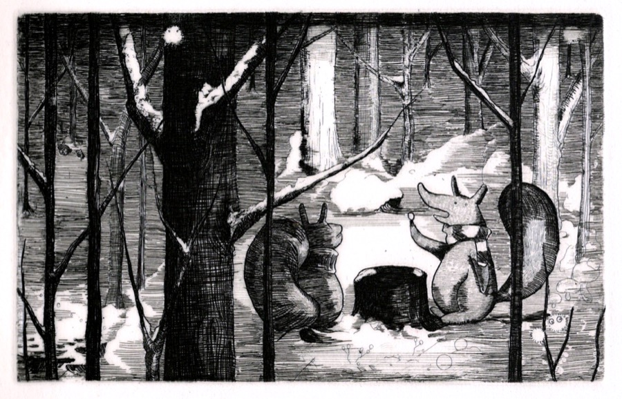

Work
 PICK UP
PICK UP
健康管理機能
2026.みんチャレ.Shipped & Wip
健康行動の習慣化・エンゲージメント向上と保健事業全体のROI改善。
 PICK UP
PICK UP
高齢者講座体験改善
2025.みんチャレ.Shipped
自治体事業における高齢者ユーザーへの体験改善と講座時間の短縮。

歩数計ウィジェット
2024.みんチャレ.Wip
Android用歩数計ウィジェット
Snapshot / A10lab
2024.5-.A10lab.Shipped
A10labでの制作実績集(一部抜粋)。

Power Design Laboratory
2024.DAD.Shipped
名古屋大学発ベンチャー企業の、認知目的のWEBサイト。
※大手自動車メーカー等の社内システム・非公開案件を中心に複数担当。掲載許可を得た本Webサイトを代表として掲載。

Snapshot / KINTO
2023.KINTO.Shipped
KINTOでの制作実績集(一部抜粋)。
Snapshot / Toyota Systems
2023.Toyota Systems.image
CADデータを元にした自動車のCGモデリングとテクスチャ作成。環境設定やレンダリングまで作業。
 PICK UP
PICK UP
持込み持出し許可証
2021.DENSO.Shipped
グループ会社間で情報記憶媒体を会社構内に持込み・持出しする際に使用するアプリ。

Snapshot / PRI･TEC
2009-2016.PRI･TEC.Shipped
PRI･TECでの制作実績集(一部抜粋)。

Playground
Personal project
趣味や練習でつくったもの。個人受注。思いつきで作ったもの。分類できないものたち。